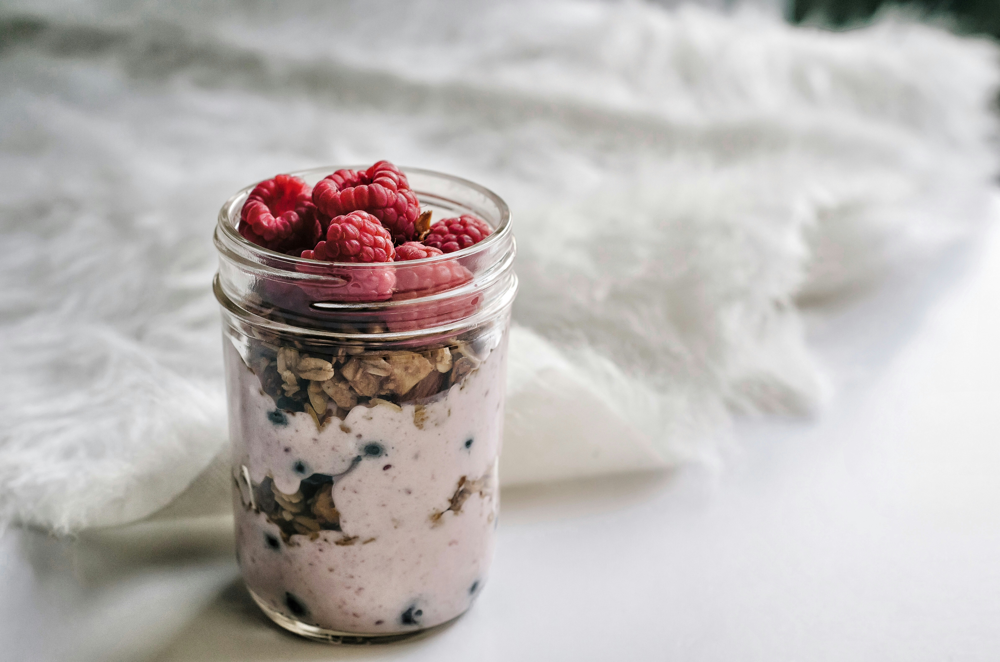

Overnight Oats

Delish Overnight Oats prepare in less than 5 minutes.
These oats are the perfect meal prep breakfast for those days when you are rushing out the door.
You can prepare them using many different flavour combinations. A differnt flavour for every morning of the week. This is certainly a breakfast you wont get tired of.
Ingredients:
- Oats
- Greek Yoghurt
- Chia Seeds
- Milk
- Protein Powder (Optional)
Steps:
- Add oats, chia seeds and protein powder to a jar.
- Make sure all dried ingredients are well mixed and add in your youghurt.
- Add your milk and mix well.
- Store in fridge for 1-2 hours minimum. Best if left overnight.
- When ready to eat, top with your favourite fresh berries or nut butters.